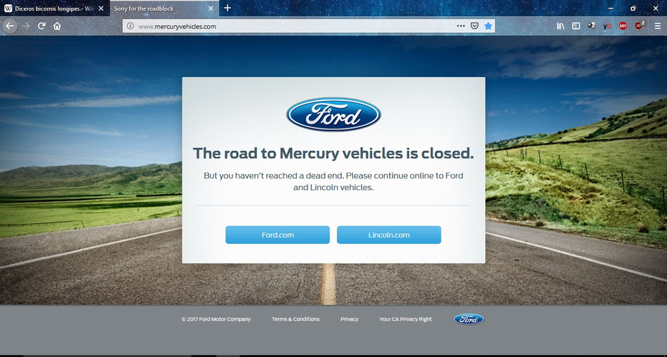

MERCURY DIVISION
IL MARCHIO MERCURY
Nel 1939, il gruppo Ford americano necessitò di fabbricare delle nuove vetture di fascia intermedia tra le Ford di base e le lussuose Lincoln. Quello stesso anno venne fondato il brand Mercury, che rimase attivo sino alla sua chiusura, datata gennaio 2011.
Mercury produsse diversi modelli, tra cui il più famoso: Cougar. Tutte le Cougar sono quindi "Mercury", brand di semi-lusso della Ford (così come Lexus è il marchio di lusso per la Toyota).
La scelta non fu casuale. Mercury era un marchio praticamente sconosciuto in Europa e Ford ritenne più efficace utilizzare il proprio nome, già ampiamente affermato presso il pubblico europeo.
Le Cougar destinate all'Europa venivano assemblate negli stabilimenti Ford di Flat Rock (Michigan, USA) e successivamente inviate presso il centro Ford di Colonia (Köln-Niehl), in Germania, dove ricevevano fari conformi alle normative europee, loghi Ford e gli altri aggiornamenti necessari alla commercializzazione nel nostro continente.
Secondo quanto riportato da Wikipedia, le vetture destinate all'Europa e al Regno Unito venivano completate presso gli stabilimenti Ford di Colonia, in Germania, dove ricevevano fari conformi alle normative europee e i loghi Ford. Negli Stati Uniti lo stesso modello veniva invece commercializzato con il marchio Mercury Cougar.
Tra i modelli più noti prodotti dal marchio Mercury troviamo Cougar, Grand Marquis, Milan, Mariner, Mountaineer, Montego, Monterey, Marauder, Villager, Sable, Capri, Lynx e molti altri.

LA FINE DEL MARCHIO MERCURY
Nel giugno 2010 Ford annunciò ufficialmente la chiusura del marchio Mercury nell'ambito di una riorganizzazione aziendale che concentrò risorse e investimenti esclusivamente sui marchi Ford e Lincoln. La produzione terminò definitivamente tra la fine del 2010 e i primi giorni del 2011.
Per molti anni il sito ufficiale Mercury mostrò una semplice pagina di commiato ai visitatori. Lo screenshot riportato qui sopra è stato salvato prima della definitiva scomparsa del sito originale e rappresenta una delle ultime testimonianze ufficiali del marchio.
Traduzione del messaggio: "La strada per Mercury è chiusa. Ma non siete arrivati a un vicolo cieco. Vi invitiamo a proseguire verso Ford e Lincoln."
Lo storico dominio mercuryvehicles.com oggi non appartiene più a Ford e non contiene più contenuti ufficiali relativi al marchio Mercury.